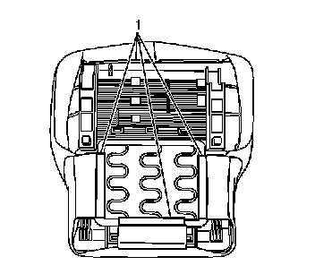
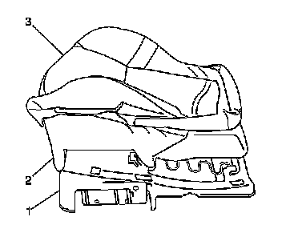

Seat Occupant Sensor: Service and Repair
Inflatable Restraint Passenger Presence System Replacement - Front
Removal Procedure

Caution: Replace the passenger presence system as a complete assembly to prevent possible injury to the occupant. All the components in the service kit are assembled and calibrated as a unit. Using only some of the components in the service kit will cause the passenger presence system to operate improperly.
1. Disable the SIR system. Refer to SIR Disabling and Enabling (Service and Repair) .
2. Remove the seat cushion from the seat assembly. Refer to Front Seat Cushion Replacement (Front Seat Cushion Replacement) .
3. Turn the seat cushion upside down on a clean protected surface.
4. Release the seat cushion cover J channels (1) from the seat cushion frame.

5. Remove the seat cushion cover (3).
6. Remove the passenger presence system and seat cushion assembly (2).
Installation Procedure
1. Install the passenger presence system and seat cushion assembly (2) to the seat cushion frame (1).
2. Install the seat cushion cover (3) over the passenger presence system and seat cushion assembly (2).
3. Work the seat cushion (2) into position so there are no wrinkles or lumps in the seat cushion cover (3).
4. Ensure the hook and loop fasteners on the seat cushion cover and the seat cushion pad are fully engaged in order to ensure proper fit of the seat cushion cover (3).
5. Turn the seat cushion assembly over.
6. Install the seat cushion cover J channels (1) to the seat cushion frame.
7. Install the seat cushion to the seat assembly. Refer to Front Seat Cushion Replacement (Front Seat Cushion Replacement) .
8. Enable the SIR system. Refer to SIR Disabling and Enabling (Service and Repair) .
Important: Perform the passenger presence system preload test procedure when replacing the passenger seat or performing any repairs to the passenger seat.
9. Perform the passenger presence system preload test procedure. Refer to Control Module References (Programming and Relearning) .